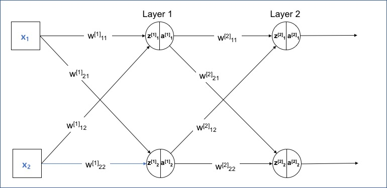

[머신러닝] MLE 기술 면접 대비 질문 - 딥러닝
수학, 통계, 머신러닝, 딥러닝 기술 면접을 위한 문제와 답변 해보기. 본 포스팅은 개념에 대해 깊이 있게 이해한다기 보다는 폭넓게 아는 것에 중점을 둠.
#Machine Learning
딥러닝 분야에서 Non-linearlty란?
딥러닝에서 비선형성이란 신경망이 복잡한 패턴을 학습할 수 있도록 하는 중요한 개념. 선형 모델은 데이터간 선형 관계만 학습할 수 있다면, 비선형 모델은 복잡하고 다차원의 관계를 학습할 수 있음. 비선형성은 주로 활성화 함수를 통해 도입.
ReLU
$$ f(x) = \max(0, x) $$가장 많이 사용되는 activation function으로, gradient vanishing 문제를 완화.Sigmoid
$$ f(x) = \frac{1}{1 + e^{-x}} $$출력 값이 0~1 사이라 이진 문제에서 주로 사용. 기울기가 0~0.25로 매우 작아 gradient vanishing 문제가 발생.Tanh
$$ f(x) = \tanh(x) = \frac{e^x - e^{-x}}{e^x + e^{-x}} $$출력 값이 -1~1 사이. 기울기가 0~1 사이로 vanishing 문제가 sigmoid보단 덜하지만 있음.Leaky ReLU
$$ f(x) = \begin{cases} x & \text{if } x > 0 \\ \alpha x & \text{if } x \leq 0 \end{cases} $$ReLU의 변형. 음수 입력에 대해 작은 기울기를 허용하여 죽은 뉴런 문제 완화.
역전파(Back Propagation)이란? 원리와 절차
Loss 함수의 gradient를 계산하여 가중치를 업데이트. 순전파 -> Loss 계산 -> Loss의 기울기 계산 -> 역전파순으로 일어난다. 체인 룰을 사용하여 각 레이어의 가중치에 대한 loss의 gradient를 계산한다.

Loss 계산
- MSE: $E = \frac{1}{2}\sum_{i=1}^{n}(y_i - \hat{y}_i)^2$
- Cross-entropy: $E = -\sum_{i=1}^{n}y_i\log(\hat{y}_i)$
출력층의 오차에 대한 가중치와 편향의 그래디언트 계산
가중치: $\frac{\partial E}{\partial w_{jk}} = \frac{\partial E}{\partial \hat{y}_k}\frac{\partial \hat{y}k}{\partial z_k}\frac{\partial z_k}{\partial w{jk}} = \delta_k \cdot a_j$
편향: $\frac{\partial E}{\partial b_k} = \frac{\partial E}{\partial \hat{y}_k}\frac{\partial \hat{y}_k}{\partial z_k}\frac{\partial z_k}{\partial b_k} = \delta_k$
여기서 $\delta_k = \frac{\partial E}{\partial \hat{y}_k}\frac{\partial \hat{y}_k}{\partial z_k}$이며, $a_j$는 이전 층의 활성화 값
은닉층의 오차에 대한 가중치와 편향의 그래디언트 계산
- 가중치: $\frac{\partial E}{\partial w_{ij}} = \delta_j \cdot a_i$
- 편향: $\frac{\partial E}{\partial b_j} = \delta_j$
행렬로 표현하면,
$\delta^{(l)} = (\mathbf{W}^{(l+1)})^T \delta^{(l+1)} \odot f'(\mathbf{z}^{(l)})$$\frac{\partial \mathcal{L}}{\partial \mathbf{W}^{(l)}} = \delta^{(l)} (\mathbf{a}^{(l-1)})^T$
가중치와 편향 업데이트
계산된 그래디언트를 이용하여 가중치와 편향을 업데이트한다. 이때 학습률 $\eta$를 사용한다.- 가중치 업데이트: $w_{ij} := w_{ij} - \eta \cdot \frac{\partial E}{\partial w_{ij}}$
- 편향 업데이트: $b_j := b_j - \eta \cdot \frac{\partial E}{\partial b_j}$
레퍼런스: 역전파 행렬 연산 예시